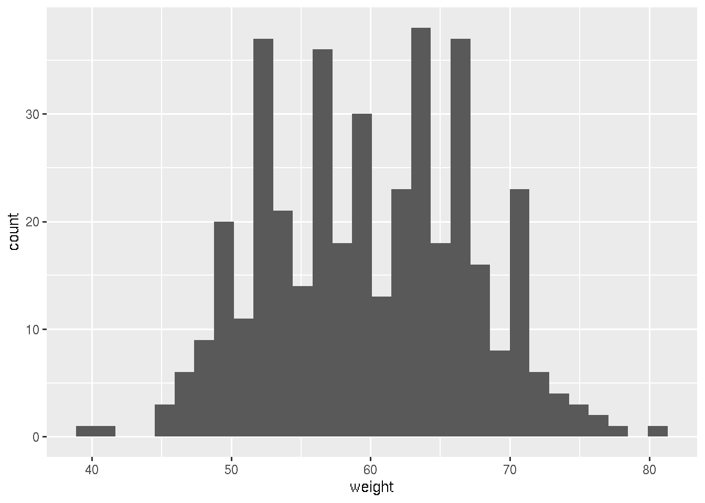
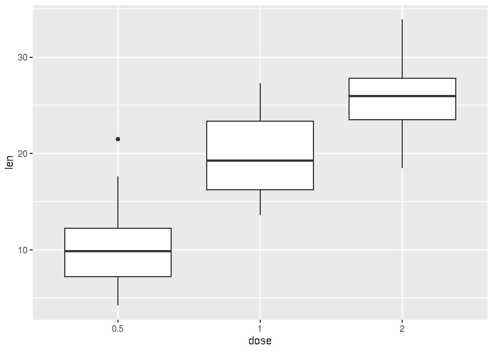
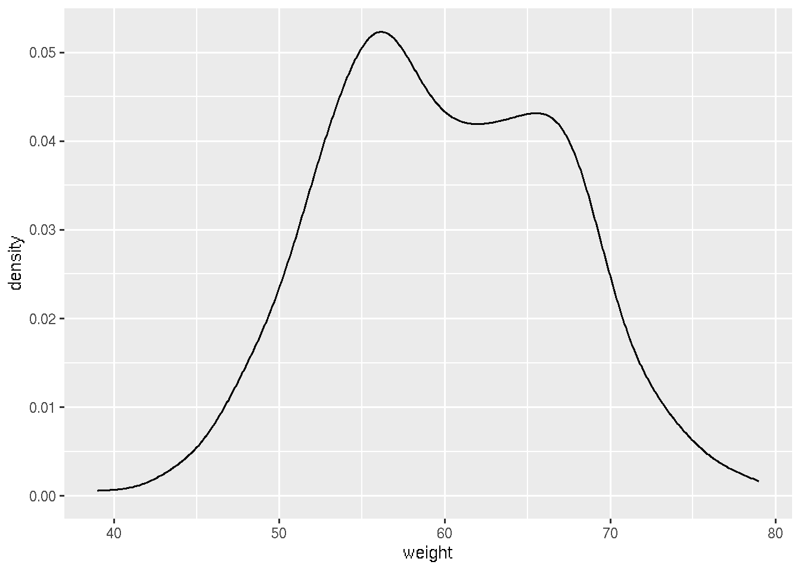
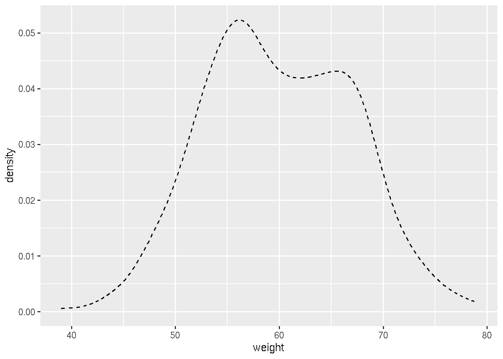

R is a powerful open-source programming language and software environment widely used for statistical computing, data analysis, and graphical visualization. Its extensive range of packages and libraries makes it a preferred tool among statisticians, data scientists, and researchers for conducting complex analyses and creating sophisticated plots. RStudio is an integrated development environment (IDE) designed to enhance the R programming experience. It provides a user-friendly interface that includes a console, syntax-highlighted editor, and tools for managing files, plots, and packages. RStudio offers features such as code completion, debugging tools, and project management, which streamline the process of writing and executing R code. Its supportive ecosystem also includes features for creating dynamic reports and documents using R Markdown, which is invaluable for reproducible research.
Data structures are organized formats for storing, managing, and accessing data efficiently in computing. They define how data is arranged and related, enabling effective data manipulation and retrieval. In R, fundamental data structures include vectors, which store elements of the same type in a one-dimensional format; matrices, which extend vectors to two dimensions, organizing data into rows and columns; data frames, which allow for heterogeneous data types across columns, making them ideal for tabular data; and lists, which provide a flexible way to hold elements of diverse types and structures. Simple variables also play a crucial role in R by holding individual pieces of data. These include numeric variables for numbers, character variables for text, logical variables for Boolean values, and factor variables for categorical data with predefined levels. Understanding both simple variables and complex data structures is essential for leveraging R’s analytical capabilities effectively, allowing for efficient data operations, manipulation, and analysis.
Operators are symbols or keywords that perform operations on variables and values, enabling various types of computations, comparisons, and data manipulations. They are fundamental to programming in R, as they allow you to create expressions that can process data and produce results.
+: Addition (e.g.,
x + y)-: Subtraction (e.g.,
x - y)*: Multiplication (e.g.,
x * y)/: Division (e.g.,
x / y)^ or **: Exponentiation
(e.g., x^y or x**y)%%: Modulus (remainder of division)
(e.g., x %% y)%/%: Integer division (e.g.,
x %/% y)==: Equal to (e.g.,
x == y)!=: Not equal to (e.g.,
x != y)>: Greater than (e.g.,
x > y)<: Less than (e.g.,
x < y)>=: Greater than or equal to (e.g.,
x >= y)<=: Less than or equal to (e.g.,
x <= y)&: Logical AND (element-wise)
(e.g., x & y)|: Logical OR (element-wise) (e.g.,
x | y)!: Logical NOT (e.g.,
!x)&&: Logical AND (for single
element) (e.g., x && y)||: Logical OR (for single element)
(e.g., x || y)<-: Leftward assignment (e.g.,
x <- 10)->: Rightward assignment (e.g.,
10 -> x)=: Alternative assignment (e.g.,
x = 10)[]: Extract elements by index (e.g.,
x[1])[[]]: Extract single element, mainly
used with lists and data frames (e.g., x[[1]])$: Extract elements by name, often
used with lists and data frames (e.g., x$name):: Sequence operator (e.g.,
1:10 generates a sequence from 1 to 10)%in%: Membership operator, checks if
elements belong to a set (e.g., x %in% y)%*%: Matrix multiplication (e.g.,
A %*% B)These operators form the backbone of R’s programming capabilities, allowing users to perform a wide range of tasks from simple arithmetic to complex data manipulation and logical operations.
Let us start with simple data operations in R.
[Note: Whatever
we writes after # symbol will not be executed or recognized as part
code. This utility we use to add comments or descriptions about the
code]
# Define two variables and assign them random values then calculate average of them.
A=10
B=12
Average=(A+B)/2
print(Average)## [1] 11In the above code, “A”, “B” and “Average” are numerical variables. Names of variables can be a letter or a word (String). In programming a word is called string.
Now imagine we have five numbers and we need to compute their sum and average. Here we do not need to define five individual variables, that will be too many variables and messy code. Instead we can define a vector of five numbers.
myVector=c(5,10,12,3,100)
print(myVector)## [1] 5 10 12 3 100For finding sum and average , there are in-built functions in R.
sum(myVector)## [1] 130mean(myVector)## [1] 26Now we came across function. A function is a block of code designed to perform a specific task, which can be reused and executed when called with given inputs. For example, to find a sum of numbers in vector, we actually need to write code to consecutively add first to last elements of the vector. But the developers of R are already wrote the code for such operations and defined as a function. We can simply re-use or call the function whenever we need it. Check here for some of the built-in functions in R.
In R, a variable can take both numerical and character value. See below code
X='Hello' # here we are assigning a string
Y="H" # here we are assigning a character
print(X)## [1] "Hello"print(Y)## [1] "H"chrVec=c("hai","friend","good morning") # a vector of strings
print(chrVec)## [1] "hai" "friend" "good morning"Note that, if we want to assign a character or a string it should be enclosed in quotes. Both single and double quotes will work. In case if you want to access individual element in a vector you can do that by specifying the element’s index (position) in the vector. See the example below,
chrVec=c("hai","friend","good morning")
print(chrVec[1]) # it will print the first element in the vector## [1] "hai"Let us now see if we can concatenate (or add) two character/string variable. For this purpose we need to use specific function paste()
# Define two character variables. Here we are using the assignment operator "<-" instead of "=". Both will work
first <- "Karolinska"
last <- "Institutet"
# Concatenate with a space in between (default behavior)
full <- paste(first, last)
print(full)## [1] "Karolinska Institutet"# Concatenate with hyphen in between
full <- paste(first, last,sep = "-")
print(full)## [1] "Karolinska-Institutet"A data frame in R is a two-dimensional, table-like structure that stores data in rows and columns, where each column can contain different types of data.
#Lets create a dataframe
# Create a data frame with three columns
df <- data.frame(
Name = c("Alice", "Bob", "Charlie"),
Age = c(25, 30, 35),
Height = c(5.5, 6.0, 5.8)
)
# View the data frame
print(df)## Name Age Height
## 1 Alice 25 5.5
## 2 Bob 30 6.0
## 3 Charlie 35 5.8If you use print(df), it will print all the rows in the data frame. If you simply write the dataframe and execute it will also print the entire dataframe. If your dataframe is big, contains many rows printing entire dataframe to the screen will be messy. So you can chose to print few lines for inspection purpose. You can try the function head() and tail(). Head will print first 5 lines and tail will print last 5 lines by default. You can also specify the number of rows you want to be printed. Another way is use the function View() which will open the dataframe in another window.
head(df)## Name Age Height
## 1 Alice 25 5.5
## 2 Bob 30 6.0
## 3 Charlie 35 5.8tail(df)## Name Age Height
## 1 Alice 25 5.5
## 2 Bob 30 6.0
## 3 Charlie 35 5.8head(df,5)## Name Age Height
## 1 Alice 25 5.5
## 2 Bob 30 6.0
## 3 Charlie 35 5.8View(df)We can access the individual columns of the dataframe using $ operator as below. Also same as accessing elements in vector by specifying the index.
df$Name## [1] "Alice" "Bob" "Charlie"df$Age## [1] 25 30 35df[2]## Age
## 1 25
## 2 30
## 3 35Let us see another interesting operation using paste() function. In the dataframe I want to add one more column which is concatenation of Name and Age column.
df$NewCoumm=paste(df$Name,df$Age,sep = "_")
df## Name Age Height NewCoumm
## 1 Alice 25 5.5 Alice_25
## 2 Bob 30 6.0 Bob_30
## 3 Charlie 35 5.8 Charlie_35A matrix in R is a two-dimensional data structure that stores elements of the same type (typically numeric, logical, or character) in a rectangular layout consisting of rows and columns. It is essentially a collection of vectors of the same length stacked together, where each column (or row) in the matrix is a vector.
Key Characteristics of Matrices in R: - Homogeneous Data
Type: All elements in a matrix must be of the same type. -
Two Dimensions: Matrices have two dimensions—rows and
columns. - Indexing: Elements in a matrix are accessed
using a pair of indices: [row, column].
You can create a matrix using the matrix() function:
# Create a matrix with 3 rows and 2 columns
my_matrix <- matrix(data = c(1, 2, 3, 4, 5, 6), nrow = 3, ncol = 2)
# View the matrix
print(my_matrix)## [,1] [,2]
## [1,] 1 4
## [2,] 2 5
## [3,] 3 6Accessing Elements in a Matrix Elements in a matrix can be accessed
using the [row, column] notation:
# Access the element in the first row and second column
element <- my_matrix[1, 2]
print(element)## [1] 4# Access all elements in the second row
second_row <- my_matrix[2, ]
print(second_row)## [1] 2 5# Access all elements in the first column
first_column <- my_matrix[, 1]
print(first_column)## [1] 1 2 3Common Matrix Operations - Transpose:
t(my_matrix) swaps the rows and columns of the matrix. -
Matrix Multiplication: %*% is used for
matrix multiplication. - Element-wise Operations: Basic
arithmetic operations like +, -,
*, and / are performed element-wise.
Matrices are widely used in statistical computing, linear algebra, and data analysis in R due to their efficiency in handling two-dimensional numeric data.
A list in R is a versatile data structure that can store a collection of elements of different types, including vectors, matrices, data frames, other lists, and more. Unlike vectors or matrices, which are homogeneous (all elements must be of the same type), a list is heterogeneous, meaning it can contain elements of different types and sizes.
Key Characteristics of Lists in R: - Heterogeneous: Elements within a list can be of different types (e.g., numeric, character, logical, or even other lists). - Ordered: Lists are ordered collections, meaning the elements maintain the order in which they were added. - Named or Unnamed: List elements can be accessed by their position (index) or by a name if the list elements are named.
Creating a List You can create a list using the
list() function:
# Create a list containing various elements
my_list <- list(
name = "Alice",
age = 25,
scores = c(90, 85, 88),
is_student = TRUE,
address = list(street = "Main St", city = "Springfield")
)
# View the list
print(my_list)## $name
## [1] "Alice"
##
## $age
## [1] 25
##
## $scores
## [1] 90 85 88
##
## $is_student
## [1] TRUE
##
## $address
## $address$street
## [1] "Main St"
##
## $address$city
## [1] "Springfield"Accessing Elements in a List Elements in a list can
be accessed using [[ ]] for positional indexing,
$ for named elements, or [ ] for
subsetting:
# Access the element by position
first_element <- my_list[[1]]
print(first_element)## [1] "Alice"# Output: "Alice"
# Access the element by name
age_element <- my_list$age
print(age_element)## [1] 25# Output: 25
# Access a nested element (street in the address list)
street_name <- my_list$address$street
print(street_name)## [1] "Main St"# Output: "Main St"
# Access multiple elements as a sublist
sublist <- my_list[c("name", "age")]
print(sublist)## $name
## [1] "Alice"
##
## $age
## [1] 25Modifying a List You can add, modify, or remove elements in a list:
# Add a new element
my_list$gender <- "Female"
# Modify an existing element
my_list$age <- 26
# Remove an element
my_list$scores <- NULL
# View the updated list
print(my_list)## $name
## [1] "Alice"
##
## $age
## [1] 26
##
## $is_student
## [1] TRUE
##
## $address
## $address$street
## [1] "Main St"
##
## $address$city
## [1] "Springfield"
##
##
## $gender
## [1] "Female"Use Cases for Lists - Flexible Data Storage: Lists are useful for storing related but diverse types of data, such as the results of statistical tests (e.g., test statistic, p-value, and data used). - Complex Data Structures: Lists can be nested, allowing you to create complex data structures like trees, graphs, or data frames within lists. - Function Returns: Many R functions return their results as lists, especially when the output is multi-faceted or complex.
Lists are one of the most powerful and flexible data structures in R, making them essential for a wide range of data manipulation and analysis tasks.
We will do various file operations through the course. This involves writing data to a file and reading data from a file to R environment.
Most, commonly used for reading contents of a file are read.csv(), read.table(), read.delim()
Most, commonly used for writing data to a file are write.csv, write.table.
Choice of the function is depend on the types of file we are reading (for reading) and types of data, how we want to store the data in a file (for writing)
In this course we are mainly using plain text files either comma separated or tab separated. So mostly we will use read.delim() and write.table function. Using these we can handle both comma and tab separated files.
While using these function it is needed to specify the location of file (file path). The file path structure is different in different operating system. For example in Linux, path of a file resides in Desktop is /home/YourUsername/Desktop/filename.txt same in windows will be C:.txt. In Mac it will be /Users/YourUsername/Desktop/filename.txt
So in order avoid file path problems, we will do all the file operations in a dedicated folder, so that we need to only specify the filename only.
First create a folder somewhere comfortable. For this tutorial I am creating a folder named Tutorial in desktop. Then I will define the folder Tutorial as our working directory.
setwd("~/Desktop/Tutorial") # In linux
#setwd("C:\Users\YourUsername\Desktop\Tutorial") # in Windows. You need to replace your username
#setwd("/Users/YourUsername/Desktop/Tutorial") # in MacAfter setting your working directory, check it has worked using the function getwd(). This function display the current working directory
getwd() # should display path to the Tutorial folder# Create a data frame
df <- data.frame(
Name = c("Alice", "Bob", "Charlie"),
Age = c(25, 30, 35),
Height = c(5.5, 6.0, 5.8)
)
# Now write the data frame to a file.
write.table(df,file="TestFile.txt",sep="\t",quote = FALSE,row.names = FALSE)
# Change the sep="\t" to sep="," for writing the dataframe to comma separated file
write.table(df,file="TestFile.csv",sep=",",quote = FALSE,row.names = FALSE)# Create a data frame
df <- data.frame(
Name = c("Alice", "Bob", "Charlie"),
Age = c(25, 30, 35),
Height = c(5.5, 6.0, 5.8)
)
# Now write the data frame to a file.
write.table(df,file="TestFile.txt",sep="\t",quote = FALSE,row.names = FALSE)
# Change the sep="\t" to sep="," for writing the dataframe to comma separated file
write.table(df,file="TestFile.txt",sep=",",quote = FALSE,row.names = FALSE)dfNew=read.delim("TestFile.csv",sep=",")
print(dfNew)## Name Age Height
## 1 Alice 25 5.5
## 2 Bob 30 6.0
## 3 Charlie 35 5.8dfNew=read.delim("TestFile.txt",sep="\t")
print(dfNew)## Name.Age.Height
## 1 Alice,25,5.5
## 2 Bob,30,6
## 3 Charlie,35,5.8# If you want to define the first column as row name
dfNew=read.delim("TestFile.txt",sep="\t",row.names = 1)
print(dfNew)## data frame with 0 columns and 3 rows# Observe the differencesR offers a wide range of plotting capabilities, with the base R plotting system providing many functions for creating basic plots. Additionally, the ggplot2 package is one of the most popular and powerful tools for creating advanced and customizable plots in R.
plot(x, y)plot(x, y, type = "l")hist(x)barplot(height)boxplot(x)pie(x)heatmap(x)ggplot2 Package:ggplot2 is part of the Tidyverse and offers a more
consistent and powerful system for creating complex graphics. In the
course we use ggplot mainly to generate all the figures.
ggplot is a package in R. A package in R is a collection of functions, data, and documentation bundled together, which extends the functionality of R. Packages provide a way to share code and data with others and to reuse code for specific tasks, such as data manipulation, statistical analysis, visualization, and more.
ggplot2
package provides functions for creating advanced graphics.datasets package contains datasets like iris
and mtcars.install.packages() function. install.packages("ggplot2")library()
function. library(ggplot2)ggplot(data, aes(x, y)) + geom_point()stats,
utils, datasets).MASS, lattice).dplyr, shiny,
tidyverse).dplyr,
data.tableggplot2,
plotlycaret,
randomForestlme4,
MASSshiny,
rmarkdownPackages are essential in R, allowing users to perform complex analyses, create stunning visualizations, and automate tasks with minimal effort. The vast ecosystem of R packages is one of the key reasons for R’s popularity in data science and statistical computing.
ggplot2 is a R package which provides several functionalities make customizable and quality figures. We can try to make different plots using ggplote package.
We can use a built in dataset provided by R, for practising.
mtcars is a built-in dataset. It is a dataframe. We can
first inspect the dataframe.
head(mtcars)## mpg cyl disp hp drat wt qsec vs am gear carb
## Mazda RX4 21.0 6 160 110 3.90 2.620 16.46 0 1 4 4
## Mazda RX4 Wag 21.0 6 160 110 3.90 2.875 17.02 0 1 4 4
## Datsun 710 22.8 4 108 93 3.85 2.320 18.61 1 1 4 1
## Hornet 4 Drive 21.4 6 258 110 3.08 3.215 19.44 1 0 3 1
## Hornet Sportabout 18.7 8 360 175 3.15 3.440 17.02 0 0 3 2
## Valiant 18.1 6 225 105 2.76 3.460 20.22 1 0 3 1Now we can use the data set to generate a x-y scatter plot. Observe
the inputs given in the ggplot function. First we give dataframe, then
we define the aesthetics using the aes() function. In
aesthetics we will input what should be in x and y axis. Then to
generate scatter plot we will add the corresponding
geometric / geom object. For scatter plot it
is geom_point().
library(ggplot2)
ggplot(mtcars, aes(x=wt, y=mpg)) + geom_point()Let us now do some customization on this plot. We will try increasing the size of point and change color
library(ggplot2)
ggplot(mtcars, aes(x=wt, y=mpg)) + geom_point(size=5,color="red")We can also set the size according an input numerical value, for
example the measurements in the column qsec. This should be
defined in the aesthetics.
library(ggplot2)
ggplot(mtcars, aes(x=wt, y=mpg,size=qsec)) + geom_point(color="red")ggplot provide further customizable options. Theme() is
a function using which we can do several kinds of customization to the
plot.
In the ggplot2 package in R, the theme()
function is used to modify and customize the non-data components of your
plot, such as text, gridlines, background, and more. The term “theme”
refers to the overall appearance or “look and feel” of the plot.
theme()theme() Do?The theme() function allows you to control the
appearance of almost every aspect of your plot that isn’t directly
related to the data itself. This includes:
element_text(): Adjust font size, color, face (bold,
italic), angle, etc.axis.title = element_text(size = 14, face = "bold", color = "blue")element_rect(): Modify rectangular elements like plot
background and panel background.panel.background = element_rect(fill = "lightgray")element_line(): Customize line properties like color,
size, and type.panel.grid.major = element_line(color = "gray", linetype = "dashed")legend.position: Control where the legend appears on
the plot.legend.position = "bottom"plot.margin: Adjust the margins around the entire
plot.plot.margin = margin(10, 10, 10, 10)theme()ggplot(mtcars, aes(x=wt, y=mpg,size=qsec)) + geom_point(color="red") +
theme(
axis.title = element_text(size = 14, face = "bold", color = "darkgreen"),
axis.text = element_text(size = 12, color = "black"),
panel.background = element_rect(fill = "lightgray"),
panel.grid.major = element_line(color = "white"),
panel.grid.minor = element_line(color = "lightblue"),
legend.position = "bottom",
plot.margin = margin(20, 20, 20, 20)
)check all functionalities of provided by theme() here
We need to use the geom object geom_line() to make line
plot.
# Create a dummy dataset for practising
df <- data.frame(dose=c("D0.5", "D1", "D2"),
len=c(4.2, 10, 29.5))
head(df)## dose len
## 1 D0.5 4.2
## 2 D1 10.0
## 3 D2 29.5library(ggplot2)
# Basic line plot
ggplot(data=df, aes(x=dose, y=len, group=1)) +
geom_line()# Change the line type and also adding point notice that we are using geom_point() to add points
ggplot(data=df, aes(x=dose, y=len, group=1)) +
geom_line(linetype = "dashed")+
geom_point()# Change the color and increase size of the line
ggplot(data=df, aes(x=dose, y=len, group=1)) +
geom_line(color="red",linewidth=3)+
geom_point()Using the geom object geom_histogram()
# Creating a dummy dataframe
df <- data.frame(
sex=factor(rep(c("F", "M"), each=200)),
weight=round(c(rnorm(200, mean=55, sd=5), rnorm(200, mean=65, sd=5)))
)
head(df)## sex weight
## 1 F 52
## 2 F 54
## 3 F 56
## 4 F 56
## 5 F 63
## 6 F 53library(ggplot2)
# Basic histogram
ggplot(df, aes(x=weight)) + geom_histogram()## `stat_bin()` using `bins = 30`. Pick better value with `binwidth`.
# Change the width of bins
ggplot(df, aes(x=weight)) +
geom_histogram(binwidth=1)# Change colors
ggplot(df, aes(x=weight)) +
geom_histogram(color="black", fill="white")## `stat_bin()` using `bins = 30`. Pick better value with `binwidth`.Using the geom object geom_bar()
# Creating a dummy dataframe
df <- data.frame(dose=c("D0.5", "D1", "D2"),
len=c(4.2, 10, 29.5))
head(df)## dose len
## 1 D0.5 4.2
## 2 D1 10.0
## 3 D2 29.5# Basic barplot
ggplot(data=df, aes(x=dose, y=len)) + geom_bar(stat="identity")# Horizontal bar plot
ggplot(data=df, aes(x=dose, y=len)) + geom_bar(stat="identity") + coord_flip()Using the geom object geom_boxplot(). We can make use of
a built in data set ToothGrowth.
ToothGrowth$dose <- as.factor(ToothGrowth$dose)
head(ToothGrowth)## len supp dose
## 1 4.2 VC 0.5
## 2 11.5 VC 0.5
## 3 7.3 VC 0.5
## 4 5.8 VC 0.5
## 5 6.4 VC 0.5
## 6 10.0 VC 0.5ggplot(ToothGrowth, aes(x=dose, y=len)) +
geom_boxplot()
# adding points corresponding each measurements
ggplot(ToothGrowth, aes(x=dose, y=len)) +
geom_boxplot() + geom_jitter(shape=16, position=position_jitter(0.2))# Use single color
ggplot(ToothGrowth, aes(x=dose, y=len)) +
geom_boxplot(fill='#A4A4A4', color="black")+
theme_classic()# Change box plot colors by groups
ggplot(ToothGrowth, aes(x=dose, y=len, fill=dose)) +
geom_boxplot()#Use custom color palettes
ggplot(ToothGrowth, aes(x=dose, y=len, fill=dose)) +
geom_boxplot()+ scale_fill_manual(values=c("#999999", "#E69F00", "#56B4E9"))# Creating dummy dataframe
df <- data.frame(
sex=factor(rep(c("F", "M"), each=200)),
weight=round(c(rnorm(200, mean=55, sd=5),
rnorm(200, mean=65, sd=5)))
)
head(df)## sex weight
## 1 F 49
## 2 F 53
## 3 F 60
## 4 F 60
## 5 F 56
## 6 F 54ggplot(df, aes(x=weight)) + geom_density()
# Add mean line
ggplot(df, aes(x=weight)) + geom_density() + geom_vline(aes(xintercept=mean(weight)),
color="blue", linetype="dashed", size=1)# Change line color and fill color
ggplot(df, aes(x=weight))+
geom_density(color="darkblue", fill="lightblue")# Change line type
ggplot(df, aes(x=weight))+
geom_density(linetype="dashed")
Note: If you need more colors, you can use the color-hex website.
Just copy the hexcode of any color , which starts with #
and use in the R code. The website link is here